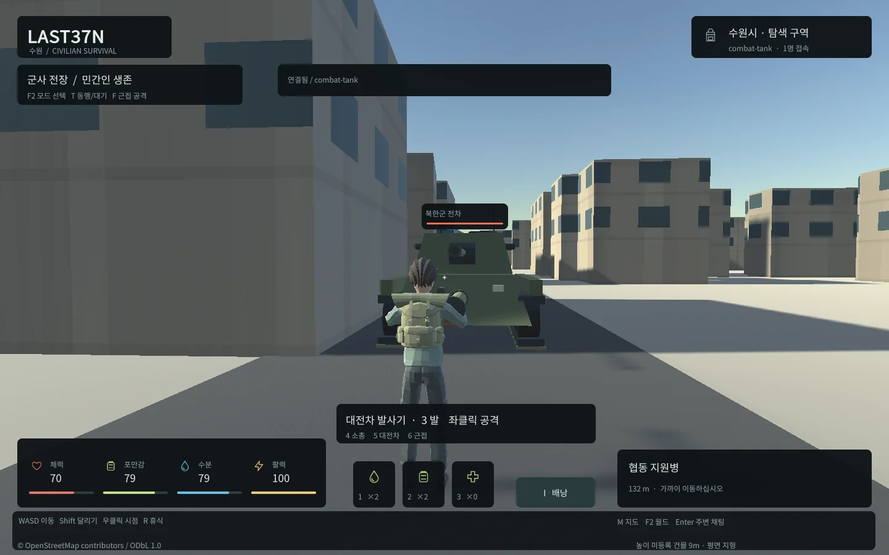
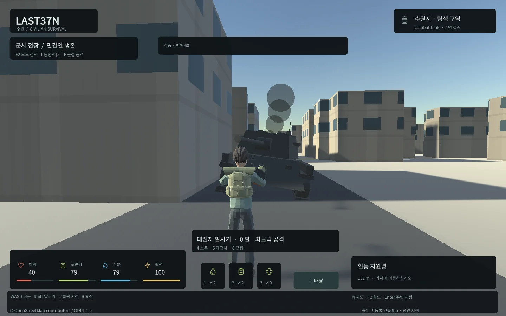
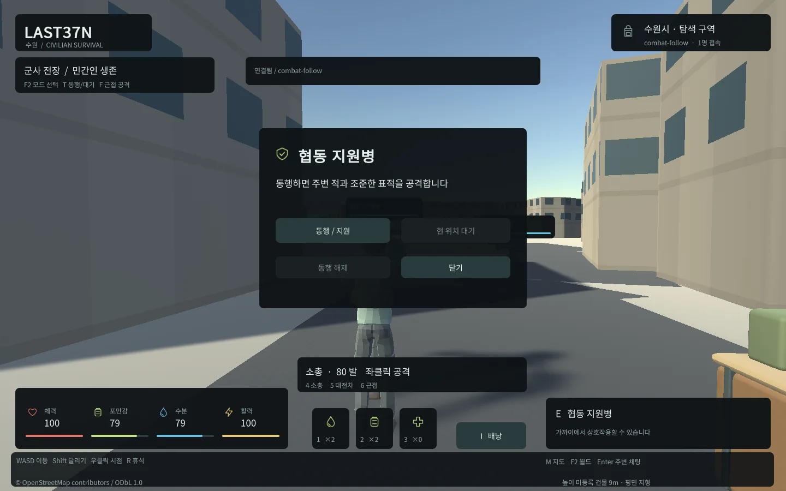
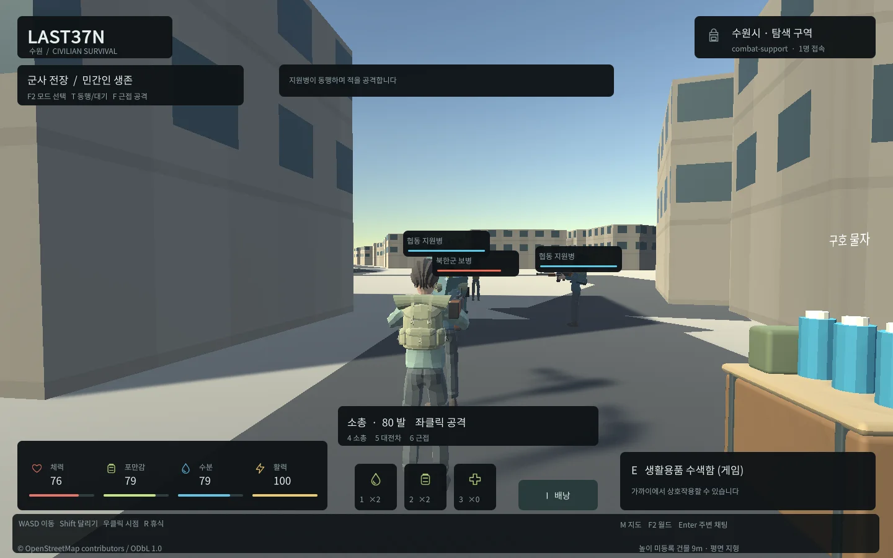

Tracefolio REPORTS & ISSUES
Tracefolio REPORTS & ISSUES전투 확장 중간 보고 · 실제 웹 교전과 NPC 협동 확인
검증 대기실제 웹에서 보병·전차·근접 돌격대·좀비 처치와 아군 동행·대기·지원 사격을 검증했습니다.
작업 결과
전투 기능과 실제 웹 교전은 통과했습니다. 네이티브 초기화 예외 수정 재검증·기존 생존 회귀·기본 로컬 적용은 진행 중입니다.
변경 내용
적용 내용
일반 월드에 북한군 보병4명·근접 돌격대2명·적 전차1대와 아군2명을 배치했습니다. 별도 suwon-zombie 월드는 좀비10명·아군2명입니다. F2로 모드를 선택하고 시작 보급함 B에서 캐릭터당 한 번 선택 장비를 받습니다. 기존 민간인 시작은 유지합니다.
4/5/6 무기 선택, 좌클릭 사격, F 근접 공격, E 아군 패널과 T 동행/대기를 제공합니다. 아군은 최대2명이며 표적 지원·현 위치 방어·소유권 해제를 지원합니다. 서버가 사거리·방향·사선·탄약·쿨다운·안전구역·피해와 저장을 검증합니다. PvP/아군 피해는 허용하지 않습니다.




Blender 원본7개와 텍스처 없는 경량 장비/전차 FBX를 제작했습니다. 기존 공용 리그에 절차적 조준·반동·근접 자세를 더했습니다. 탱크는 적 NPC이며 운전 기능은 없습니다. 밸런스와 수량은 server/config/combat.json의 provisional 설정입니다.
검증
실제 헤드리스 Edge의 보급/중복 거부·모드 전환·소총 처치/탄약·전차 파괴/로켓·근접 돌격대/좀비 처치·동행·대기·지원 사격 처치가 통과했습니다. 사용자 데스크톱은 제어하지 않았습니다.
서버50개 테스트0실패0건너뜀: 실제 PostgreSQL 동시 중복 공격1회·저장 실패 롤백·재시작 복원·월드 격리·WebSocket 피격/원격 무기 상태·안전구역·비접속 아군 해제를 포함합니다.100명 실제 PostgreSQL/WebSocket 약92초, 이동80명·재접속10명·9790명령, p95 636.73ms·최대 상태 간격1236.12ms·오류0입니다. 이는100개 Unity 렌더링을 의미하지 않습니다. 합성 전투1200tick/100명/9NPC의 AI p95 0.39ms, 전투 이벤트224개를 확인했습니다.
웹 초기4개 파일10,523,578bytes로12MiB 예산을 통과했습니다. 로컬 헤드리스 장면별3초 표본은 약4160FPS·Unity 할당4042MB였습니다. 짧은 단일 PC 관찰이며 저사양 장치/모바일·최악 장면 성능 보장은 아닙니다.
실패 이력: FBX 축을 컨테이너 변환으로 수정하고 실제 총기 방향/헬멧 높이를 재검증했습니다. 웹 테스트의 포커스 클릭/포인터 위치를 분리하여 재QA했습니다. 네이티브에서 MaterialPropertyBlock 생성 시점 예외를 확인하여 Awake 초기화로 수정했습니다. 해당 예외의 수정 후 검증 상태는 아래 남은 사항에 구분합니다. 원본 실패 화면/로그와 현재 결과는 docs/qa/combat에 보존합니다.
실제 캡처를1440x900 WebP로 압축하고 바이트/가독성을 확인합니다. 교훈 검토: 기존 전역의 실제 로그·실행 화면·실패 보존·명시적 스테이징 지침으로 포함되므로 전역 지침 추가·변경 없음입니다. 프로젝트 세부 사항은 docs/COMBAT.md에 기록했습니다.
남은 사항
네이티브 초기화 예외 수정 후 재빌드·재QA, 기존 생존 UI 회귀, 기본 로컬8787/8788 적용, 최종 메뉴얼/보고 배포가 남아 있습니다. 이 중간 보고를 전체 완료로 해석하지 않습니다.
작업 시간
- 제안 시간: 90~150분. 시작2026-10-30 22:20:41 KST(Asia/Seoul).
- 실제로 완료된 시간: 결과 기록 2026-10-30 23:29:28 KST, 시작 후 68분 47초. 진행 중이며 전체 완료 시각이 아닙니다.
- XERJ: 미사용 — XERJ 도구 미제공. rg·현재 소스·실제 DB/Unity/헤드리스 브라우저로 확인했습니다.